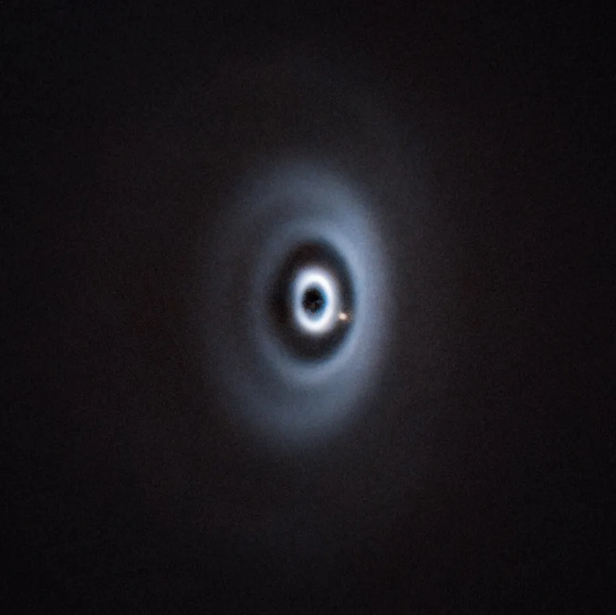

August 26, 2025
WISPIT 2b: young planet in the gap of a ringed disk
The SPHERE instrument on ESO's Very Large Telescope imaged a newborn planet in the disk around the young star WISPIT 2. The image shows the disk with several rings; the planet WISPIT 2b is the bright dot in the dark gap to the right of the inner ring.
According to ESO this is the first clear detection of a young planet in a disk with multiple rings. WISPIT 2b has about five Jupiter masses. The MagAO-X instrument on the Magellan telescope detected hydrogen gas falling onto the planet – so it is still gathering material.
Source: ESO Picture of the Week: "A very hungry planet" (potw2534a)., 2025-08-26